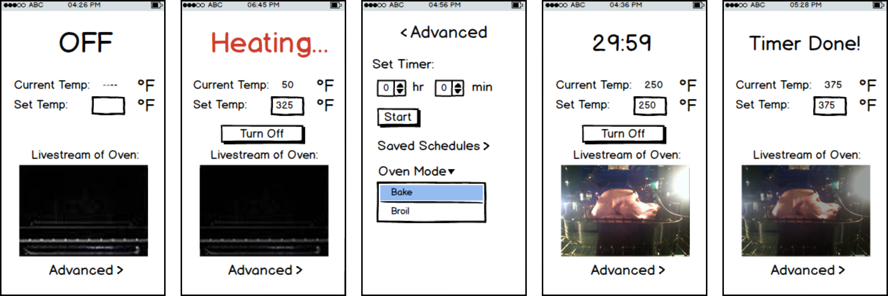
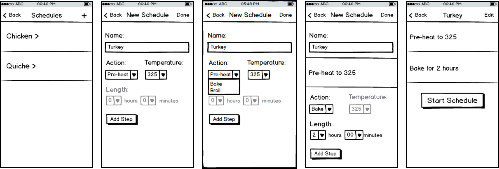
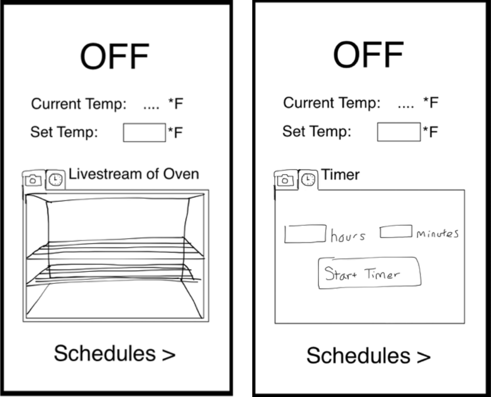
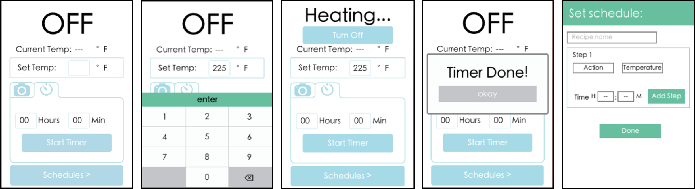

Overview
Timing and monitoring baking can be a headache. Furthermore, there’s no way to control an oven from a distance. Our solution was a create a smart oven that can be monitored and controlled with an app. My main roles in a team of five were creating wireframes, performing user testing, and developing the front end side of the app.
Contextual Inquiry
I interviewed a woman in her twenties. The interview took place while she was making dinner in her kitchen. She only used the stove and I focused on her interaction with it and asked questions based on that. Something that stood out to me was how fast and how much she was moving around. I asked about the idea of using an application while cooking, and she said it would be helpful if she could interact with the stove through voice control.
I also asked her a few questions about the oven although she didn’t use it. She said that she wouldn’t want to preheat it unless she was at home for safety issues. However, she would like to be able to make sure it’s turned off if she left home. She also said she doesn’t like using the oven because she can’t see the food cooking and judge when it should be done.
Wireframes
I created wireframes that would be used for testing. These wireframes focus on the interaction with the oven.
We also implemented a feature that allows people to set schedules for meals they might commonly make. Schedules can set the oven temperature and a timer and go through different phases of settings if needed.
User Testing: Low Fidelity
For low fidelity user testing, we used printed out cards of the wireframes and I played the role of the computer. The biggest issues we found were:
1. Confusion over timer being in the "advanced" section.
2. Users didn't know how to preheat oven and were confused over how to start heating the oven.
3. After preheating, there was no way for a user to start the next step in a schedule.
4. Users can't tell what step of a schedule they are on from the home screen.
5. Users are able to create a schedule that has no preheating step in it.
Fortunately, the majority of our issues had simple solutions. However, we redesigned our home screen to address the "advanced" options issue. We created two tabs - one for the oven view and one for the oven options.
Interactive Prototype
I had a large role in developing the interactive prototype. This was developed in Kinoma Studio, an IDE that allows people to create smart phone and other applications from pure JavaScript.
User Testing: Prototype
We tested three different users and had them interact with the oven and create and execute a schedule. All users experienced issues with the keyboard as they either couldn't find the "enter" button immediately or wanted to tap outside of the keyboard to hide it and could not do so. Another issue was that values in the timer weren't zero at default, which meant a user would have to type out the hours and minutes every time. Lastly, the positioning for the "add step" button in schedules was confusing for users. While the first two problems were simple programming fixes, the third resulted in a redesign of the schedule creation page to give more clarity.